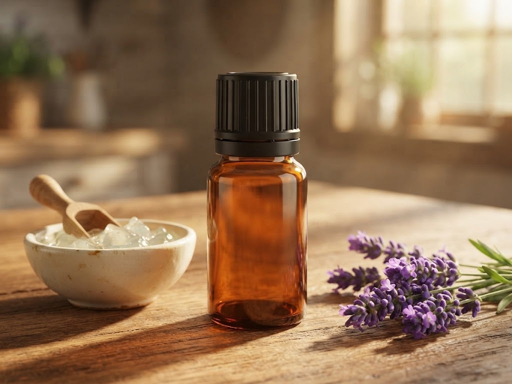

🌿 Lekce 22
péče po sluníčku
Ukážu vám olej po opalování a jak zklidnit drobné spáleniny esenciálními oleji.

Rostlinné a esenciální oleje samy o sobě nechrání spolehlivě před sluncem — SPF hodnoty, které se o nich občas tradují, nejsou ověřené a spoléhat se na ně místo opalovacího krému může vést ke spálení. Na skutečnou ochranu použijte testovaný opalovací krém, například BEWIT opalovací krém SPF 10 s minerálním filtrem. Recepty níž jsou na péči po opalování, ne na ochranu při něm.
1 šálek nosného oleje — rakytníkový, mrkvový, z vlašských ořechů, kokosový a jiné (klidně i jejich kombinace).
Špetka BEWIT bio Aloe Vera prášku (volitelné).
Směs esenciálních olejů po opalování GOLD B, nebo Levandule, Heřmánek, Smil, Cedr, Blue Tansy.
Rozmixujte aloe prášek v oleji.
Přidejte esenciální oleje.
Skladujte na tmavém chladném místě ve skleněné nádobě.
Na spálenou pokožku nejlépe zabere směs GOLD Sun B, dále GOLD Lavender, GOLD Superior nebo Frankincense Quattuor. Z jednodruhových olejů můžete použít Levanduli, Heřmánek, Smil, Yzop, Blue Tansy, Kadidlo, Tea Tree.
Esence je možné nanášet neředěné přímo na postižené místo, případně je naředit v kvalitním nosném oleji, například rakytníkovém.
U popálenin 3. stupně je nutné okamžitě vyhledat lékařskou pomoc.
Poslední krok: Tím naše lekce končí — kam se vydat dál.